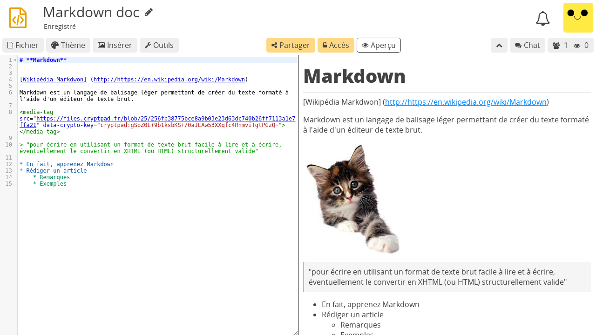

Code / Markdown¶
L'éditeur de code/markdown CryptPad est une intégration de CodeMirror.
Barre d'outils¶
Outils : Affiche ou cache la barre d'outils de l'éditeur de texte.
Insert: Add an image to the document. The image can be chosen in the drive or uploaded. Logged in users
Thème : Réglages d'affichage détaillés ci-dessous.
Aperçu : Affiche ou cache la fenêtre de rendu Markdown.
Thème¶
Couleurs par auteurs : Surligne le texte écrit par chaque utilisateur avec sa couleur (choisie dans les préférences). Quand cette fonction est active :
Cacher les couleurs d'auteurs pour cacher les couleurs, elles peuvent être réactivées et restent actives pour les autres utilisateurs.
Couleurs par auteurs > Effacer et Désactiver pour effacer les couleurs pour tous les utilisateurs et supprimer les données.
Thème : Gamme de thèmes de couleurs pour l'éditeur de code.
Langage : Utilisé pour la coloration syntaxique.
Import/Export¶
.md, toute autre extension de fichier texte peut être spécifiée pour le nom du fichier à exporter.Markdown¶
L'application Code est particulièrement adaptée à la rédaction de documents en Markdown, une syntaxe qui permet un formatage basique tout en restant lisible et facilement convertible dans d'autres formats comme le HTML.
Pour voir des exemples de syntaxe Markdown utilisée dans CryptPad, veuillez consulter :
En plus de la syntaxe Markdown de base, les fonctions suivantes sont disponibles :
[TOC]Insère une table des matières.Liste de tâches
- [ ] tâchepour une tâche à faire : tâche.- [x] tâchepour une tâche faite : tâche.
Ainsi que des extensions :
Pour utiliser une extension, nommez-la comme la syntaxe d'un bloc de code Markdown, par exemple :
``` mermaid
<!-- your mermaid code -->
```
pour des exemples détaillés de l'usage des extensions, veuillez consulter :
Images¶
La syntaxe Markdown pour l'inclusion d'images distantes de type  est bloquée par CryptPad pour des raisons de sécurité.
Utilisateurs enregistrés
Pour insérer des images depuis le CryptDrive ou en ajouter de nouvelles, utiliser le menu Insérer dans la barre d'outils.
Voir Déconnexion à distance pour plus de détails.
Galerie¶
Pour voir une galerie de toutes les images et diagrammes d'un document :
Double-Clicsur une image ou un diagramme dans l'aperçu Markdown.Naviguer avec les flêches du clavier.
Fermer la galerie avec ou
Échap.